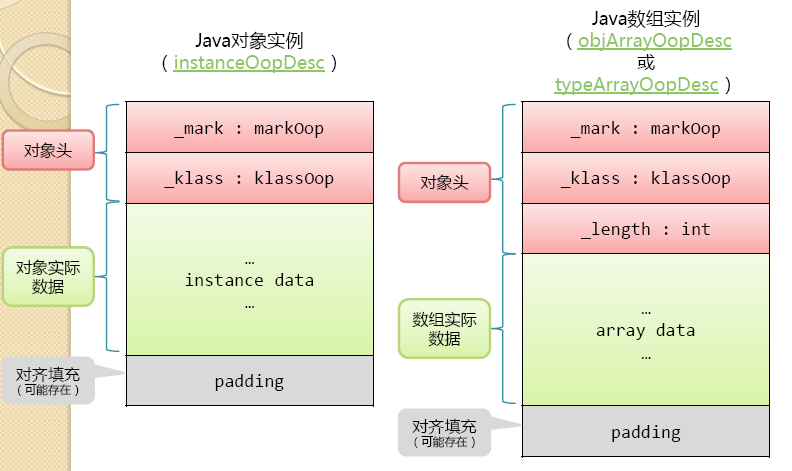
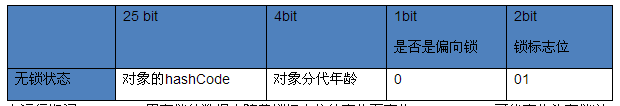

前言
本来想看static的初始化，结果又像以前一样，有一点进入，最后陷到一片里面。 oop：Ordinary Object Pointers
对象的内存布局
HotSpot虚拟机中，对象在内存中存储的布局可以分为三块区域：对象头（Header）、实例数据（Instance Data）、对齐填充（Padding）。 如图所示：

-
对象头：JVM用3个Word（字宽）存储对象头，在32位JVM中，一字宽等于四字节，即32bit- 第一部分(Mark Word)用于存储对象自身的运行时数据（对象状态信息）。 
- 第二部分(Class Metadata Address)是类元数据指针，JVM通过这个指针来确定这个对象是哪个类的实例。
- 第三部分(Array length)是数组类型对象特有的，用来表明数组的长度。
-
实例数据：对象真正存储的有效信息，也就是我们在程序中定义的各类型字段，无论是从父类继承的，还是子类中定义的都需要记录下来。该部分的顺序会受JVM的分配策略和源码中定义顺序的影响。无论哪种策略，宽度相同的字段总是相连分配的
-
对齐填充：HotSpot里，GC堆上的对象要求在8字节边界上分配；也就是说对象的起始地址必须是8的倍数，占用的空间也必须是8的倍数。不足的用0填充。不是必然存在的。
上面图片可以看出，数组对象比普通对象的头信息多一条length描述，那是因为Java对象实例的大小是固定的，所以确定了类型就可以确定所占内存大小。但是Java数组类型不包含数组长度信息，无法确定数组实例大小，必须在对象头嵌入_length字段来记录数组长度。
对象的访问定位
建立对象的目的是使用对象，我们Java程序需要通过栈上的reference数据来操作堆上的具体对象。由于reference类型在JVM规范中只规定了试一个指向对象的引用，并没有定义这个引用的实现方式。主流的访问方式有两种：使用句柄、直接指针。
HotSpot是使用的“直接指针”的方法。
日期：2013-5-6、2013-5-7